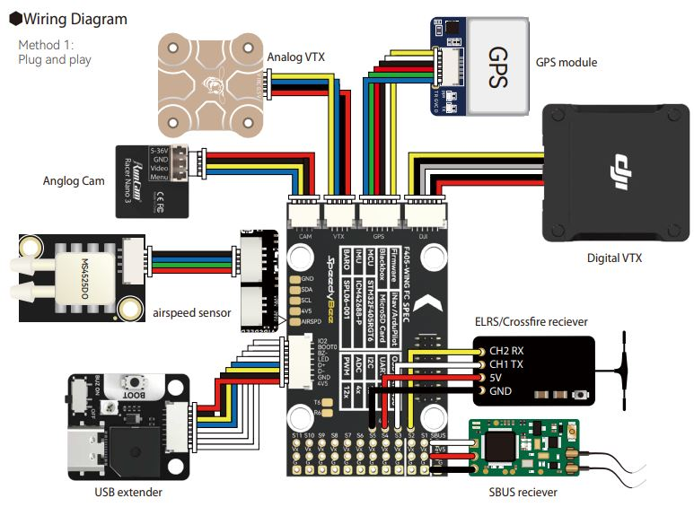

SpeedyBeeF405WING¶
The SpeedyBeeF405wing integrates all the highly desired features for a Plane autopilot:
Sufficient outputs for QuadPlane applications as well as normal complex Fixed Wing applications
Full peripheral capabiliy: GPS/Compass/Analog or Digital Airspeed/SBUS,PPM or Serial RC/HD Video/Rangefinders,etc.
JST-GH connectors for most peripherals, Dupont connectors for motor/servo and serial RC
Integrated current and voltage monitors
Integrated OSD or HD Video
VTX control via IRX TRAMP or SmartAudio
Integrated Wireless Telemetry (WIFI MAVLink)
Plus several unique features:
Multiple LED string connectors with selectable predefined displays or control via autopilot
Integrated LED battery level indicator

the above image and some content courtesy of SpeedyBee
Note
Due to flash memory limitations, this board does not include all ArduPilot features. See Firmware Limitations for details.
Specifications¶
Processor
STM32F405RGT6 ARM (168MHz)
AT7456E OSD
Sensors
ICM-42688P IMU (accel, gyro)
SPL-06 barometer
Voltage & 120A current sensor
Power
2S - 6S Lipo input voltage with voltage monitoring
90A Cont., 215A peak current monitor
9V/12/5V, 1.8A BEC for powering Video Transmitter
4.9V/6V/7.2V, 4.5A BEC for servos
5V, 2.4A BEC for internal and peripherals
Interfaces
12x PWM outputs DShot capable (Serail LED output is PWM12)
1x RC input
5x UARTs/serial for GPS and other peripherals, 6th UART internally tied to Wireless board)
I2C port for external compass, airspeed, etc.
microSDCard for logging, etc.
USB-C port
Size and Dimensions
52mm x 32mm x 19mm
2??g
Where to Buy¶
User Manual¶
Wiring Diagram¶
{kind=link}
Default UART order¶
The UARTs are marked Rn and Tn in the above pinouts. The Rn pin is the receive pin for UARTn. The Tn pin is the transmit pin for UARTn.
SERIAL0 -> USB
SERIAL1 -> USART1 (Serial RC input) (DMA capable)
SERIAL2 -> USART2 (RX tied to inverted SBUS RC input, but can be used as normal UART if BRD_ALT_CONFIG =1)
SERIAL3 -> UART3 (GPS) (TX DMA capable)
SERIAL4 -> UART4 (User) (TX DMA capable)
SERIAL5 -> UART5 (User, available on DJI air unit connector) (TX DMA capable)
SERIAL6 -> UART6 (tied to internal wireless module, MAVLink2 telem)
Serial protocols shown are defaults, but can be adjusted to personal preferences.
Servo/Motor Outputs¶
All motor/servo outputs are Dshot and PWM capable. However, mixing Dshot, serial LED, and normal PWM operation for outputs is restricted into groups, ie. enabling Dshot for an output in a group requires that ALL outputs in that group be configured and used as Dshot, rather than PWM outputs.
PWM 1,2 in group1
PWM 2,4 in group2
PWM 5-7 in group3
PWM 8-10 in group4
PWM 11,12 in group5 Note: PWM12 is setup for serial LED use by default, if PWM11 is used for motors or servos, you must re-assign PMW12 to a normal PWM output or nothing
RC Input¶
The SBUS pin, is passed by an inverter to RX2 (UART2 RX), which by default is mapped to a timer input instead of the UART, and can be used for all ArduPilot supported receiver protocols, except CRSF/ELRS and SRXL2 which require a true UART connection. However, FPort, when connected in this manner, can provide RC without telemetry.
To allow CRSF and embedded telemetry available in Fport, CRSF, and SRXL2 receivers, the RX2 pin can also be configured to be used as true UART2 RX pin for use with bi-directional systems by setting the BRD_ALT_CONFIG to “1” so it becomes the SERIAL2 port’s RX input pin.
With this option, SERIAL2_PROTOCOL must be set to “23”, and:
PPM is not supported.
DSM/SRXL connects to the RX2 pin, but SBUS would still be connected to SBUS.
FPort requires connection to TX2 and RX2 via a bi-directional inverter. See [copywiki destination=”plane,copter,rover,blimp”].
CRSF also requires a TX2 connection, in addition to RX2, and automatically provides telemetry.
SRXL2 requires a connection to TX2 and automatically provides telemetry. Set SERIAL2_OPTIONS to “4”.
Note
UART1 is configured by default for serial receivers. You can also have more than one receiver in the system at a time (usually used for long range hand-offs to a remote TX). See Multiple Radio Control Receivers for details.
Any UART can be used for RC system connections in ArduPilot also, and is compatible with all protocols except PPM (SBUS requires external inversion on other UARTs). See Radio Control Systems for details.
Note
the “4V5” pin above the SBUS pin and the 4V5 pins in the GPS, Airspeed, and Telem connectors are powered when USB is connected. Be careful not to present too much load to the USB source or voltage droop may occur. All other 5V pins are only powered when battery is present.
WIFI¶
The SpeedyBeeF405Wing has an integrated wireless module allowing connections to GCS via WIFI. See the user manual for instructions. While BT is advertised as an alternate mode, this has not been proven to work with all BT dongles or cell-phones by ArduPilot. The WIFI mode has been tested with a variety of systems, however. Be sure the SERIAL6_BAUD = 115 and that nothing is loading the TX6/RX6 pins which are connected to the wireless module, by default..
OSD Support¶
The SpeedyBeeF405Wing supports using its internal OSD using OSD_TYPE 1 (MAX7456 driver). External OSD support such as DJI or DisplayPort is supported using UART5 or any other free UART. See MSP OSD for more info.
VTX Control¶
UART5 TX is located in the Video Output connector to provide IRC Tramp or Smart Audio control of video transmitters. See Video Transmitter Support for more information.
Battery Monitor Configuration¶
These settings are set as defaults when the firmware is loaded (except BATT_AMP_PERVLT which needs to be changed from the default value). However, if they are ever lost, you can manually set the parameters:
Enable Battery monitor.
BATT_MONITOR =4
Then reboot.
BATT_VOLT_MULT 11.5
Connecting a GPS/Compass module¶
This board does not include a GPS or compass so an external GPS/compass should be connected as shown below in order for autonomous modes to function.
Firmware¶
This board does not come with ArduPilot firmware pre-installed. Use instructions here to load ARduPilot the first time Loading Firmware onto boards without existing ArduPilot firmware.
Firmware for this board can be found here in sub-folders labeled “SpeedyBeeF405WING”.
[copywiki destination=”plane,copter,rover,blimp”]